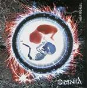

| Artist: | Omnia |
| Title: | Hormonal |
| Label: | Viajero Inmovil |
| Length(s): | 41 minutes |
| Year(s) of release: | 2003 |
| Month of review: | [08/2003] |
| 1) | Conoce A Tus Enemigos | 6.40 |
| 2) | Los Primeros Ojos | 5.10 |
| 3) | Hormonal | 5.16 |
| 4) | Mi Hermano, Yo Mismo | 6.19 |
| 5) | 40 Horas | 4.14 |
| 6) | Los Peores Ojos | 2.23 |
| 7) | Tren En Movimiento | 3.21 |
| 8) | Icaso | 2.28 |
| 9) | El Tunel | 5.07 |
| 10) | Ciego En El Alma | 1.28 |
Los Primeros Ojos is an instrumental, carried by flute and piano. As traditional as it may be, in style it's more like the flute solo in Firth Of Fifth, than for instance Camel material.
After an organ opener Hormonal continues pretty vocal and rocky. As it progresses we get more of an interchange between instruments and vocals, both by adding instrumental sections, and strengthening musical melody in the vocal sections.
Mi Hermano, Yo Mismo is pretty peaceful, moving quietly along. Especially the ending doesn't attract me as much, being more traditional with Spanish guitar, without ever becoming about anything.
The instrumental 40 Horas opens rather ominously, in a style quite different from previous tracks. The synths sound somewhat cold in the fore, but supported by what sounds like mellotron and a gentle drum roll. As the track moves on, it becomes somewhat more open and starts to sound like The Brazilian.
Los Peores Ojos is guitar directed instrumental, with synths using the kind of sounds Genesis uses in Tonight, Tonight, Tonight (same album as The Brazilian), with the clicky and bleepy sounds.
Tren En Movimiento is once again rocky, flat drumming sounds and dominant vocal melody. Neither asset, nor liability. Ocaso is a gentle sounding keyboard solo.
El Tunel starts pretty poprocky, with riffy guitars, slapped bass and keyboard carpet. This problem is far from solved by the vocals setting in. Not a good one.
Ciego En El Alma is an instrumental closer, sort of an outro.